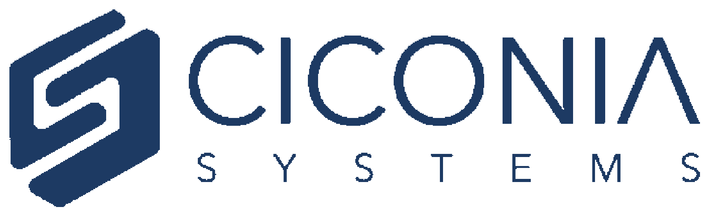
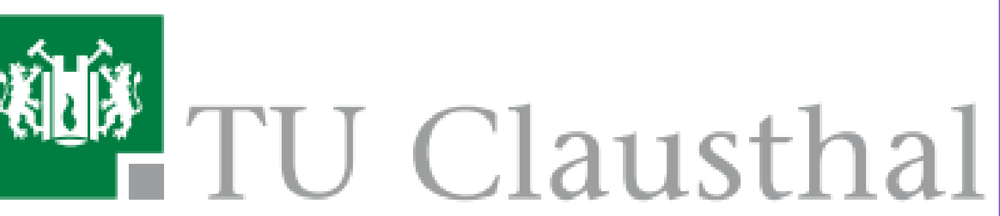
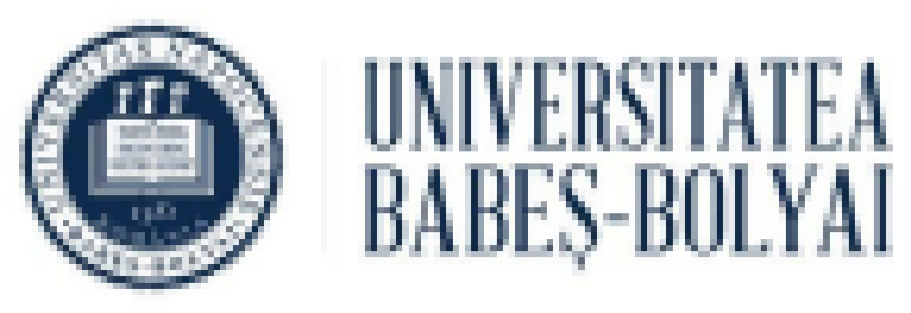
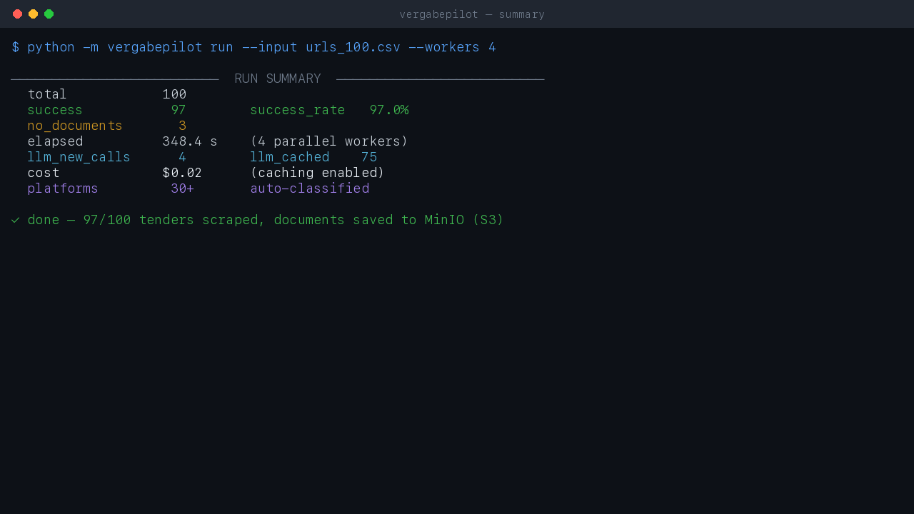
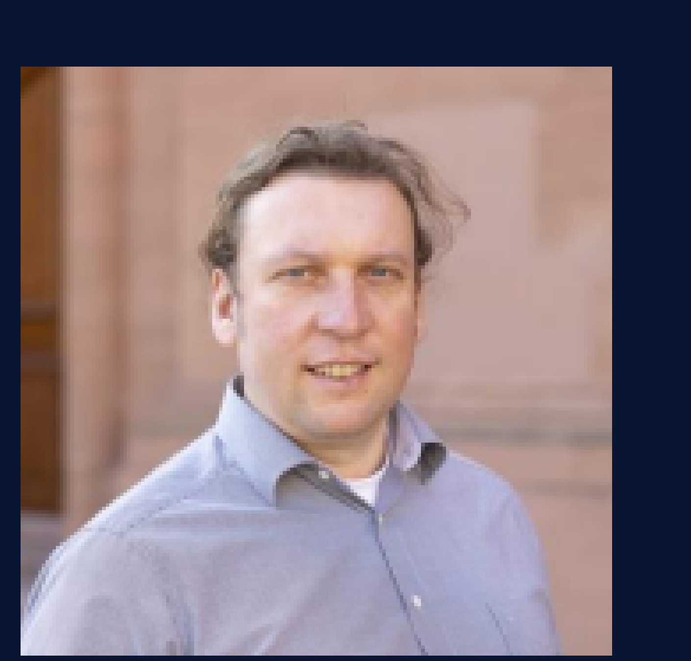
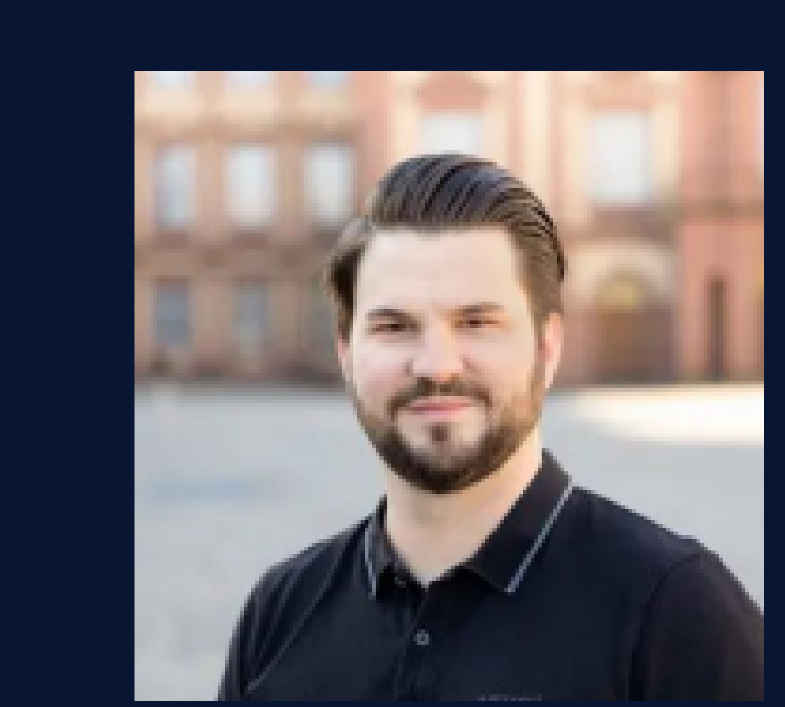

| Rank | Model | Success | Latency | Cost/run | Grade |
|---|---|---|---|---|---|
| #1 | Gemini 2.5 Flash Lite | 83% | 4.2 s | $0.0018 | A |
| #2 | Gemini 2.5 Flash | 83% | 4.5 s | $0.0034 | A |
| #3 | GPT-4o mini | 67% | 12.8 s | $0.0027 | B |
| #4 | Claude Sonnet | 67% | 17.7 s | $0.0719 | B |

